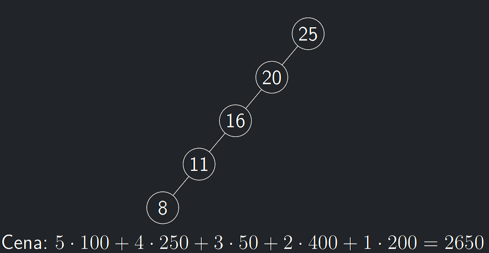
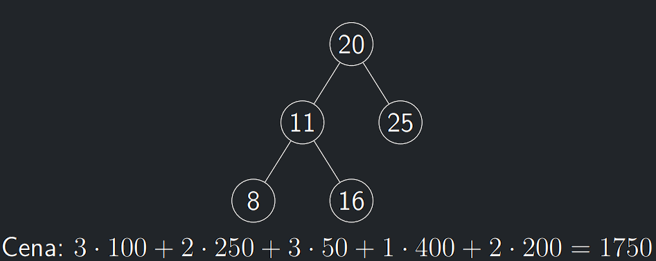

10.5 Optimalizace BVS
- Pro danou množinu hodnot není BVS jednoznačně určený.
- Ne vždy je nejdůležitějším faktorem hloubka celého stromu.
- Občas je důležitá hloubka daného prvku/klíče a frekvence jeho vyhledávání.
- Mějme data obsahující prvky 8, 11, 16, 20, 25.
- Nechť je vypozorováno v posledních tisíci vyhledáváních, že prvek 8 je vyhledáván 100krát, prvek 11 je vyhledáván 250krát a další prvky po řadě 50, 400 a 200krát.
 
Histogramové BVS - myšlenka
- Hledané BVS musí mít nějaký kořen.
- Jelikož kořen neznáme a protože není vůbec jasné jak poznat správný kořen, rezignujeme a „prostě vyzkoušíme všechny“.
- Jestliže jsme jako kořen zvolili hodnotu r, rozdělí se naše data na
dvě části \(L = \{1, \dots , r − 1\}\) a \(R = \{r + 1, \dots , n\}\). - Naším dalším úkolem pak bude naleznout nejlepší možné stromy \(T_L\) a \(T_R\) pro tato data a získat výsledek.
- Data obsažená v \(L\) i v \(R\) získají jedno vyhledávání navíc.
\[
1 \cdot p_r + \sum_{i \in L}(1 + h_L(i))p_i + \sum_{i \in R}(1 + h_R(i))p_i
= \sum_{i \in [n]} p_i + \sum_{i \in L} h_L(i)p_i + \sum_{i \in R} h_R(i)p_i
\]
- kde \(h_L(i)\) a \(h_R(i)\) označují příslušné hladiny ve stromech pro data v \(L\) a \(R\).
Algoritmus 10.10 (BVSOPT_rec)
Pozorování o BVSOPT_rec
BVSOPT_rec(p_1,...,p_n) je konečný a vrací hodnotu nějakého BVS.
Lemma o korektnosi BVSOPT_rec
BVSOPT_rec(p_1,...,p_n) vrací hodnotu optimálního řešení.
Důkaz korektnosti BVSOPT_rec
BVSOPT_rec(p_1,...,p_n)vrací hodnotu pro nějaký BVS a tedy speciálně vrací horní odhad na optimum.- Obráceně pak uvažme nějaké optimální řešení – tedy binární vyhledávací strom \(T\).
- Formálně dokazujeme indukcí podle velikosti (tj. počtu vrcholů) stromu \(T\).
ZI: Pro jednovrcholové stromy jistě vrací optimální řešení.
IK:
- Nechť tedy \(T\) má alespoň 2 vrcholy a nechť \(r\) je jeho kořen
(
BVSOPT_reczkouší \(r\)). - Dále se strom \(T\) skládá z levého podstromu \(T_L\), který obsahuje data \(L\) (obdobně pro \(R\)).
- Protože \(T_L\) má alespoň o jeden vrchol méně než \(T\), lze na něho
aplikovat indukční předpoklad, tedy
BVSOPT_rec(L)vrátí hodnotu optimálního řešení (nanejvýš takové ceny jako \(T_L\)). - Stejně pro \(T_R\).
- Pak ale cena vrácená
BVSOPT_recje nanejvýš taková jako je cena \(T\).
Histogramové BVS - memoizace
- Indexy \(l, u \in n\) – odkud kam sahají aktivní data.
- Pomocné pole \(M[n][n]\) incializované na \(\bot\).
Algoritmus 10.11 (BVSOPT)
Lemma o časové složitosti BVSOPT
BVSOPT(1, n) počítá v čase \(O(n^3)\).
K zamyšlení
Časová složitos se dá vylepšit na \(O(n^2)\) pomocí chytřejšího výběru kořenu (řádek 6)